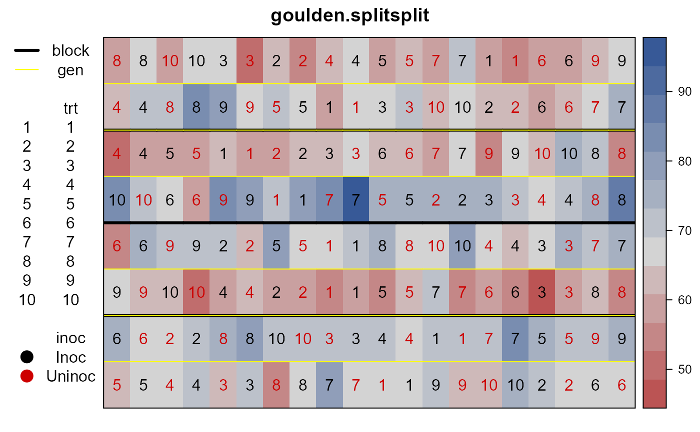

goulden.splitsplit.RdSplit-split-plot experiment of wheat
data("goulden.splitsplit")
A data frame with 160 observations on the following 9 variables.
rowrow
colcolumn
yieldyield
inocinoculate
trttreatment number
gengenotype
drydry/wet dust application
dustdust treatment
blockblock
An interesting split-split plot experiment in which the sub-plot treatments have a 2*5 factorial structure.
An experiment was conducted in 1932 on the experimental field of the Dominion Rust Research Laboratory. The study was designed to determine the effect on the incidence of root rot, of variety of wheat, kinds of dust for seed treatment, method of application of the dust, and efficacy of soil inoculation with the root-rot organism.
The field had 4 blocks.
Each block has 2 whole plots for the genotypes.
Each whole-plot had 10 sub-plots for the 5 different kinds of dust and 2 methods of application.
Each sub-plot had 2 sub-sub-plots, one for inoculated soil and the other one for uninoculated soil.
C. H. Goulden, (1939). Methods of statistical analysis, 1st ed. Page 18. https://archive.org/stream/methodsofstatist031744mbp
None
# \dontrun{ library(agridat) data(goulden.splitsplit) dat <- goulden.splitsplit libs(desplot) ## Experiment design. Goulden p. 152-153 ## desplot(gen ~ col*row, data=dat, ## out1=block, out2=trt, text=dust, col=inoc, cex=1, ## main="goulden.splitsplit") desplot(dat, yield ~ col*row, out1=block, out2=gen, col=inoc, num=trt, cex=1, main="goulden.splitsplit")# Match Goulden table 40 m1 <- aov(yield ~ gen + dust + dry + dust:dry + gen:dust + gen:dry + gen:dust:dry + inoc + inoc:gen + inoc:dust + inoc:dry + inoc:dust:dry +inoc:gen:dust + inoc:gen:dry + Error(block/(gen+gen:dust:dry+gen:inoc:dry)), data=dat)#> Warning: Error() model is singular#> #> Error: block #> Df Sum Sq Mean Sq F value Pr(>F) #> Residuals 3 989.5 329.8 #> #> Error: block:gen #> Df Sum Sq Mean Sq F value Pr(>F) #> gen 1 3639 3639 16.86 0.0262 * #> Residuals 3 648 216 #> --- #> Signif. codes: 0 '***' 0.001 '**' 0.01 '*' 0.05 '.' 0.1 ' ' 1 #> #> Error: block:gen:dust:dry #> Df Sum Sq Mean Sq F value Pr(>F) #> dust 4 987.6 246.90 12.587 2.65e-07 *** #> dry 1 117.3 117.31 5.980 0.0178 * #> dust:dry 4 46.2 11.54 0.588 0.6725 #> gen:dust 4 146.7 36.67 1.869 0.1292 #> gen:dry 1 91.5 91.51 4.665 0.0352 * #> gen:dust:dry 4 148.1 37.02 1.887 0.1260 #> Residuals 54 1059.2 19.62 #> --- #> Signif. codes: 0 '***' 0.001 '**' 0.01 '*' 0.05 '.' 0.1 ' ' 1 #> #> Error: block:gen:dry:inoc #> Df Sum Sq Mean Sq F value Pr(>F) #> inoc 1 965.3 965.3 90.023 6.3e-07 *** #> gen:inoc 1 0.3 0.3 0.029 0.8686 #> dry:inoc 1 68.9 68.9 6.426 0.0262 * #> gen:dry:inoc 1 3.9 3.9 0.364 0.5574 #> Residuals 12 128.7 10.7 #> --- #> Signif. codes: 0 '***' 0.001 '**' 0.01 '*' 0.05 '.' 0.1 ' ' 1 #> #> Error: Within #> Df Sum Sq Mean Sq F value Pr(>F) #> dust:inoc 4 379.8 94.95 6.153 0.000394 *** #> dust:dry:inoc 4 25.8 6.45 0.418 0.794754 #> gen:dust:inoc 4 119.4 29.85 1.935 0.118502 #> Residuals 52 802.4 15.43 #> --- #> Signif. codes: 0 '***' 0.001 '**' 0.01 '*' 0.05 '.' 0.1 ' ' 1# }